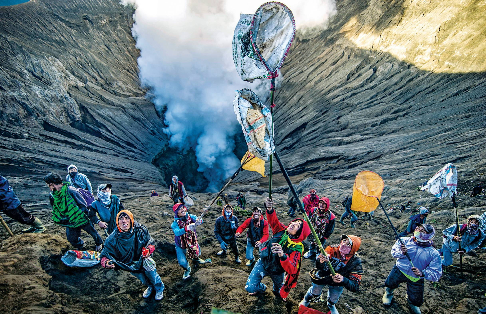

Catch Them If You Can

JUNI KRISWANTO/AFP/GETTY JUNI KRISWANTO
Tenggerese, indigenous people of the island of Java, use nets to catch offerings tossed into the Bromo volcano on June 30. The ritual, part of the Yadnya Kasada festival to honor the gods, is based on the ancient legend of a princess named Roro Anteng and her husband, Joko Seger, who meditated atop Mount Bromo.